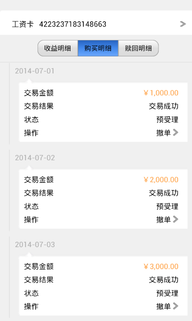
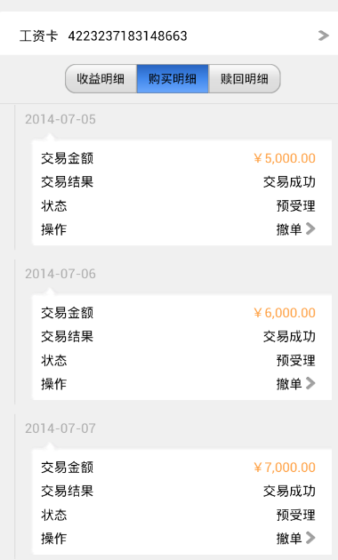
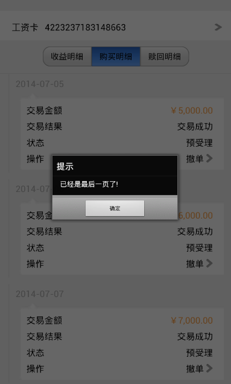
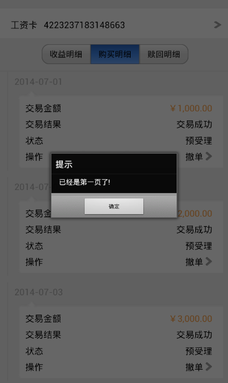

Table滑动继续加载
1 效果图
原型上效果图

上图中所示的购买明细记录是一个可滑动的表格，当购买记录超过一定的条数时，往上滑动可以加载更多的内容并更新表格，往下滑动可以获得前一页显示的记录。本节将讲述如何实现这样一个可以滑动动态加载内容的table。
2 实现方法
示例的完整代码链接为：scroll_tab.xml
table 的滑动加载功能是由 scrolltable 控件实现的。语法如下：
<table type="scrolltable" preUrl="" nextUrl=""></table>
其中，preUrl 和 nextUrl 属性分别对应在表格中下滑和上滑时要实现的效果。如在本节示例中，上滑可以加载更多内容，则令nextUrl="getMore()"，getMore()函数实现了获得更多记录并更新表格内容的功能；下滑可以得到前一页的显示记录，则令preUrl="getPre()"，getPre()函数实现了获得前一页记录的功能。代码片段如下：
<body class="body">
...
<table type="scrolltable" class="detail_table" border="0" name="table_detail" preUrl="getPre()" nextUrl="getMore()"></table>
</body>
scrolltable 在到达最上端或最下端被拉动时，自带了箭头方向改变的动画效果。其他跟普通的 table 使用方法相同。
在示例中，我们把所有的购买记录数据存到了 table 类型的 dataset1 中，在实际使用时，数据可能被存在json文件中或者数据库中，只要将其转化为相应的 table 即可。dataset1的数据如下：
--购买记录table
local dataset1 = {{date="2014-07-01",amount="￥1,000.00",result="交易成功",state="预受理",operation="撤单"},
{date="2014-07-02",amount="￥2,000.00",result="交易成功",state="预受理",operation="撤单"},
{date="2014-07-03",amount="￥3,000.00",result="交易成功",state="预受理",operation="撤单"},
{date="2014-07-04",amount="￥4,000.00",result="交易成功",state="预受理",operation="撤单"},
{date="2014-07-05",amount="￥5,000.00",result="交易成功",state="预受理",operation="撤单"},
{date="2014-07-06",amount="￥6,000.00",result="交易成功",state="预受理",operation="撤单"},
{date="2014-07-07",amount="￥7,000.00",result="交易成功",state="预受理",operation="撤单"}};
我们设定 limit 为每页显示的记录条数，startIndex 和 endIndex 分别为要显示的记录在 dataset1 中的开始和结束索引值。detailList(coll_list,startIndex,endIndex)函数根据传入的 table、开始索引值和结束索引值，拼接 scrolltable 的报文；initial()函数调用detailList()函数获得报文并更新表格。代码片段如下：
--table中记录的条数
local table_n = #dataset1;
--table显示的最多记录数
local limit = 4;
--table显示记录的起始索引
local startIndex = 1;
--table显示记录的结束索引
local endIndex = startIndex+limit-1;
--拼接table报文
function detailList(coll_lists,startIndex,endIndex)
local tr_info = "";
for i=startIndex,endIndex,1 do
tr_info = tr_info..[[<tr class="detail_tr">
<td class="td1" align="right"><img class="img_vline" src="local:divider1.png"></img></td>
<td class="td2">
<label class="label_date">]]..coll_lists[i]["date"]..[[</label>
<div class="div_bg" border="0">
<label class="label_amount1">交易金额</label>
<label class="label_amount2">]]..coll_lists[i]["amount"]..[[</label>
<label class="label_result1">交易结果</label>
<label class="label_result2">]]..coll_lists[i]["result"]..[[</label>
<label class="label_state1">状态</label>
<label class="label_state2">]]..coll_lists[i]["state"]..[[</label>
<label class="label_operation1">操作</label>
<label class="label_operation2">]]..coll_lists[i]["operation"]..[[</label>
<img class="img_select2" src="local:select.png"></img>
</div>
</td>
</tr>]];
end
return tr_info;
end
--setHtml
function initial(coll_lists,startIndex,endIndex)
local tr_info=detailList(coll_lists,startIndex,endIndex);
local table_content = [[<table type="scrolltable" class="detail_table" border="0" name="table_detail"> nextUrl="getMore()"]]..tr_info..[[</table>]];
local table_detail = document:getElementsByName("table_detail");
if table_detail and #table_detail>0 then
table_detail[1]:setInnerHTML(table_content);
end
end
getPre()和getMore()函数分别实现表格下拉和上拉的动态变化，它们重新计算新一页中 startIndex 和 endIndex 的值，并调用initial()函数更新表格。
getPre()函数代码如下：
--获得前一页
function getPre()
endIndex = startIndex-1;
startIndex = endIndex-limit+1;
if startIndex>=1 then
initial(dataset1,startIndex,endIndex);
else
window:alert("已经是第一页了!");
end
end
在getPre()函数中，判定了两种状态:
- startIndex>=1，即未到第一页时，则根据 startIndex 和 endIndex 更新表格内容;
- 否则，提示"已经是第一页"的信息。
getMore()函数代码如下：
--获得后一页
function getMore()
startIndex = startIndex+limit;
endIndex = startIndex+limit-1;
if startIndex<=table_n then
if endIndex<=table_n then
initial(dataset1,startIndex,endIndex);
else
endIndex = table_n;
initial(dataset1,startIndex,endIndex);
end
else
startIndex = startIndex-limit;
window:alert("已经是最后一页了!");
end
end
在getMore()函数中，判定了三种状态：
- startIndex 和 endIndex 都在 dataset1 的长度范围内，则直接根据索引值更新表格内容;
- startIndex 在 dataset1 长度范围内，而 endIndex 超出了 dataset1 的范围，即最后一页中记录条数不够每页最多显示条数的情况，则修改 endIndex 为 dataset1 的最后一个索引值并更新表格内容;
- startIndex 和 endIndex 都不在 dataset1 的长度范围内，即到达最后一页但用户还继续往上滑动的情况，则提示"已经是最后一页"的信息，并重新设定 startIndex 的值。
3 示例效果图
总的购买记录有7条，每页最多显示四条

第二页显示剩下的三条

继续上拉时提示"已经是最后一页"

第一页向下拉时提示"已经是第一页"

4 注意事项
在实现 scrolltable 的 preUrl 和 nextUrl 的响应函数时，要特别考虑到达最后一页和第一页的情况。开发人员可根据自己的方案实现这两个函数，示例仅供参考。